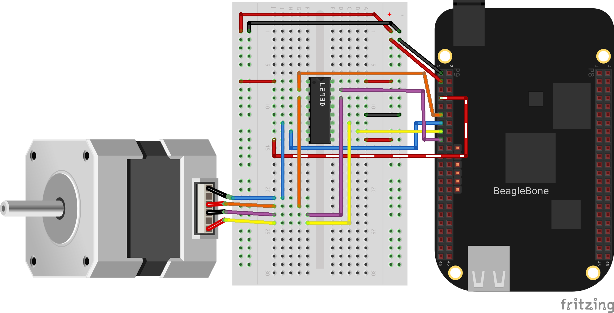

Motors
Introduction
One of the many fun things about embedded computers is that you can move physical things with motors. But there are so many different kinds of motors (servo, stepper, DC), so how do you select the right one?
The type of motor you use depends on the type of motion you want:
- R/C or hobby servo motor
-
Can be quickly positioned at various absolute angles, but some don’t spin. In fact, many can turn only about 180°.
- Stepper motor
-
Spins and can also rotate in precise relative angles, such as turning 45°. Stepper motors come in two types: bipolar (which has four wires) and unipolar (which has five or six wires).
- DC motor
-
Spins either clockwise or counter-clockwise and can have the greatest speed of the three. But a DC motor can’t easily be made to turn to a given angle.
When you know which type of motor to use, interfacing is easy. This chapter shows how to interface with each of these motors.
|
Note
|
Motors come in many sizes and types. This chapter presents some of the more popular types and shows how they can interface easily to the Bone. If you need to turn on and off a 120 V motor, consider using something like the PowerSwitch presented in [displays_powerSwitch]. |
|
Note
|
The Bone has built-in 3.3 V and 5 V supplies, which can supply enough current to drive some small motors. Many motors, however, draw enough current that an external power supply is needed. Therefore, an external 5 V power supply is listed as optional in many of the recipes. |
|
Note
|
All the examples in the book assume you have cloned the Cookbook repository on www.github.com. Go here [basics_repo] for instructions. |
Controlling a Servo Motor
Problem
You want to use BeagleBone to control the absolute position of a servo motor.
Solution
We’ll use the pulse width modulation (PWM) hardware of the Bone to control a servo motor.
To make the recipe, you will need:
-
Servo motor
-
Breadboard and jumper wires
-
1 kΩ resistor (optional)
-
5 V power supply (optional)
The 1 kΩ resistor isn’t required, but it provides some protection to the general-purpose input/output (GPIO) pin in case the servo fails and draws a large current.
Wire up your servo, as shown in Driving a servo motor with the 3.3 V power supply.
|
Note
|
There is no standard for how servo motor wires are colored. One of my servos is wired like Driving a servo motor with the 3.3 V power supply: red is 3.3 V, black is ground, and yellow is the control line. I have another servo that has red as 3.3 V and ground is brown, with the control line being orange. Generally, though, the 3.3 V is in the middle. Check the datasheet for your servo before wiring. |

The code for controlling the servo motor is in servoMotor.py, shown in Code for driving a servo motor (servoMotor.py). You need to configure the pin for PWM.
bone$ cd ~/BoneCookbook/docs/04motors/code bone$ config-pin P9_16 pwm bone$ ./servoMotor.py
#!/usr/bin/env python
# ////////////////////////////////////////
# // servoMotor.py
# // Drive a simple servo motor back and forth on P9_16 pin
# // Wiring:
# // Setup: config-pin P9_16 pwm
# // See:
# ////////////////////////////////////////
import time
import signal
import sys
pwmPeriod = '20000000' # Period in ns, (20 ms)
pwm = '1' # pwm to use
channel = 'b' # channel to use
PWMPATH='/dev/bone/pwm/'+pwm+'/'+channel
low = 0.8 # Smallest angle (in ms)
hi = 2.4 # Largest angle (in ms)
ms = 250 # How often to change position, in ms
pos = 1.5 # Current position, about middle ms)
step = 0.1 # Step size to next position
def signal_handler(sig, frame):
print('Got SIGINT, turning motor off')
f = open(PWMPATH+'/enable', 'w')
f.write('0')
f.close()
sys.exit(0)
signal.signal(signal.SIGINT, signal_handler)
print('Hit ^C to stop')
f = open(PWMPATH+'/period', 'w')
f.write(pwmPeriod)
f.close()
f = open(PWMPATH+'/enable', 'w')
f.write('1')
f.close()
f = open(PWMPATH+'/duty_cycle', 'w')
while True:
pos += step # Take a step
if(pos > hi or pos < low):
step *= -1
duty_cycle = str(round(pos*1000000)) # Convert ms to ns
# print('pos = ' + str(pos) + ' duty_cycle = ' + duty_cycle)
f.seek(0)
f.write(duty_cycle)
time.sleep(ms/1000)
# | Pin | pwm | channel
# | P9_31 | 0 | a
# | P9_29 | 0 | b
# | P9_14 | 1 | a
# | P9_16 | 1 | b
# | P8_19 | 2 | a
# | P8_13 | 2 | b#!/usr/bin/env node
////////////////////////////////////////
// servoMotor.js
// Drive a simple servo motor back and forth on P9_16 pin
// Wiring:
// Setup: config-pin P9_16 pwm
// See:
////////////////////////////////////////
const fs = require("fs");
const pwmPeriod = '20000000'; // Period in ns, (20 ms)
const pwm = '1'; // pwm to use
const channel = 'b'; // channel to use
const PWMPATH='/dev/bone/pwm/'+pwm+'/'+channel;
const low = 0.8, // Smallest angle (in ms)
hi = 2.4, // Largest angle (in ms)
ms = 250; // How often to change position, in ms
var pos = 1.5, // Current position, about middle ms)
step = 0.1; // Step size to next position
console.log('Hit ^C to stop');
fs.writeFileSync(PWMPATH+'/period', pwmPeriod);
fs.writeFileSync(PWMPATH+'/enable', '1');
var timer = setInterval(sweep, ms);
// Sweep from low to hi position and back again
function sweep() {
pos += step; // Take a step
if(pos > hi || pos < low) {
step *= -1;
}
var dutyCycle = parseInt(pos*1000000); // Convert ms to ns
// console.log('pos = ' + pos + ' duty cycle = ' + dutyCycle);
fs.writeFileSync(PWMPATH+'/duty_cycle', dutyCycle);
}
process.on('SIGINT', function() {
console.log('Got SIGINT, turning motor off');
clearInterval(timer); // Stop the timer
fs.writeFileSync(PWMPATH+'/enable', '0');
});
// | Pin | pwm | channel
// | P9_31 | 0 | a
// | P9_29 | 0 | b
// | P9_14 | 1 | a
// | P9_16 | 1 | b
// | P8_19 | 2 | a
// | P8_13 | 2 | bRunning the code causes the motor to move back and forth, progressing to successive positions between the two extremes. You will need to press ^C (Ctrl-C) to stop the script.
Discussion
[displays_PWMdiscussion] gies details on how to use a PWM.
Controlling a Servo with an Rotary Encoder
Problem
You have a rotary encoder from [digital_rotaryEncoder_js] that you want to control a servo motor.
Solution
Combine the code from [digital_rotaryEncoder_js] and Controlling a Servo Motor.
bone$ config-pin P9_16 pwm bone$ config-pin P8_11 eqep bone$ config-pin P8_12 eqep bone$ ./servoEncoder.py
#!/usr/bin/env python
# ////////////////////////////////////////
# // servoEncoder.py
# // Drive a simple servo motor using rotary encoder viq eQEP
# // Wiring: Servo on P9_16, rotary encoder on P8_11 and P8_12
# // Setup: config-pin P9_16 pwm
# // config-pin P8_11 eqep
# // config-pin P8_12 eqep
# // See:
# ////////////////////////////////////////
import time
import signal
import sys
# Set up encoder
eQEP = '2'
COUNTERPATH = '/dev/bone/counter/counter'+eQEP+'/count0'
maxCount = '180'
ms = 100 # Time between samples in ms
# Set the eEQP maximum count
fQEP = open(COUNTERPATH+'/ceiling', 'w')
fQEP.write(maxCount)
fQEP.close()
# Enable
fQEP = open(COUNTERPATH+'/enable', 'w')
fQEP.write('1')
fQEP.close()
fQEP = open(COUNTERPATH+'/count', 'r')
# Set up servo
pwmPeriod = '20000000' # Period in ns, (20 ms)
pwm = '1' # pwm to use
channel = 'b' # channel to use
PWMPATH='/dev/bone/pwm/'+pwm+'/'+channel
low = 0.6 # Smallest angle (in ms)
hi = 2.5 # Largest angle (in ms)
ms = 250 # How often to change position, in ms
pos = 1.5 # Current position, about middle ms)
step = 0.1 # Step size to next position
def signal_handler(sig, frame):
print('Got SIGINT, turning motor off')
f = open(PWMPATH+'/enable', 'w')
f.write('0')
f.close()
sys.exit(0)
signal.signal(signal.SIGINT, signal_handler)
f = open(PWMPATH+'/period', 'w')
f.write(pwmPeriod)
f.close()
f = open(PWMPATH+'/duty_cycle', 'w')
f.write(str(round(int(pwmPeriod)/2)))
f.close()
f = open(PWMPATH+'/enable', 'w')
f.write('1')
f.close()
print('Hit ^C to stop')
olddata = -1
while True:
fQEP.seek(0)
data = fQEP.read()[:-1]
# Print only if data changes
if data != olddata:
olddata = data
# print("data = " + data)
# # map 0-180 to low-hi
duty_cycle = -1*int(data)*(hi-low)/180.0 + hi
duty_cycle = str(int(duty_cycle*1000000)) # Convert from ms to ns
# print('duty_cycle = ' + duty_cycle)
f = open(PWMPATH+'/duty_cycle', 'w')
f.write(duty_cycle)
f.close()
time.sleep(ms/1000)
# Black OR Pocket
# eQEP0: P9.27 and P9.42 OR P1_33 and P2_34
# eQEP1: P9.33 and P9.35
# eQEP2: P8.11 and P8.12 OR P2_24 and P2_33
# AI
# eQEP1: P8.33 and P8.35
# eQEP2: P8.11 and P8.12 or P9.19 and P9.41
# eQEP3: P8.24 abd P8.25 or P9.27 and P9.42
# | Pin | pwm | channel
# | P9_31 | 0 | a
# | P9_29 | 0 | b
# | P9_14 | 1 | a
# | P9_16 | 1 | b
# | P8_19 | 2 | a
# | P8_13 | 2 | bControlling the Speed of a DC Motor
Problem
You have a DC motor (or a solenoid) and want a simple way to control its speed, but not the direction.
Solution
It would be nice if you could just wire the DC motor to BeagleBone Black and have it work, but it won’t. Most motors require more current than the GPIO ports on the Bone can supply. Our solution is to use a transistor to control the current to the bone.
Here we configure the encoder to returns value between 0 and 180 inclusive. This value is then mapped to a value between min (0.6 ma) and max (2.5 ms). This number is converted from milliseconds and nanoseconds (time 1000000) and sent to the servo motor via the pwm.
Here’s what you will need:
-
3 V to 5 V DC motor
-
Breadboard and jumper wires
-
1 kΩ resistor
-
Transistor 2N3904
-
Diode 1N4001
-
Power supply for the motor (optional)
If you are using a larger motor (more current), you will need to use a larger transistor.
Wire your breadboard as shown in Wiring a DC motor to spin one direction.

Use the code in Driving a DC motor in one direction (dcMotor.js) (dcMotor.js) to run the motor.
#!/usr/bin/env python
# ////////////////////////////////////////
# // dcMotor.js
# // This is an example of driving a DC motor
# // Wiring:
# // Setup: config-pin P9_16 pwm
# // See:
# ////////////////////////////////////////
import time
import signal
import sys
def signal_handler(sig, frame):
print('Got SIGINT, turning motor off')
f = open(PWMPATH+'/enable', 'w')
f.write('0')
f.close()
sys.exit(0)
signal.signal(signal.SIGINT, signal_handler)
pwmPeriod = '1000000' # Period in ns
pwm = '1' # pwm to use
channel = 'b' # channel to use
PWMPATH='/dev/bone/pwm/'+pwm+'/'+channel
low = 0.05 # Slowest speed (duty cycle)
hi = 1 # Fastest (always on)
ms = 100 # How often to change speed, in ms
speed = 0.5 # Current speed
step = 0.05 # Change in speed
f = open(PWMPATH+'/duty_cycle', 'w')
f.write('0')
f.close()
f = open(PWMPATH+'/period', 'w')
f.write(pwmPeriod)
f.close()
f = open(PWMPATH+'/enable', 'w')
f.write('1')
f.close()
f = open(PWMPATH+'/duty_cycle', 'w')
while True:
speed += step
if(speed > hi or speed < low):
step *= -1
duty_cycle = str(round(speed*1000000)) # Convert ms to ns
f.seek(0)
f.write(duty_cycle)
time.sleep(ms/1000)#!/usr/bin/env node
////////////////////////////////////////
// dcMotor.js
// This is an example of driving a DC motor
// Wiring:
// Setup: config-pin P9_16 pwm
// See:
////////////////////////////////////////
const fs = require("fs");
const pwmPeriod = '1000000'; // Period in ns
const pwm = '1'; // pwm to use
const channel = 'b'; // channel to use
const PWMPATH='/dev/bone/pwm/'+pwm+'/'+channel;
const low = 0.05, // Slowest speed (duty cycle)
hi = 1, // Fastest (always on)
ms = 100; // How often to change speed, in ms
var speed = 0.5, // Current speed;
step = 0.05; // Change in speed
// fs.writeFileSync(PWMPATH+'/export', pwm); // Export the pwm channel
// Set the period in ns, first 0 duty_cycle,
fs.writeFileSync(PWMPATH+'/duty_cycle', '0');
fs.writeFileSync(PWMPATH+'/period', pwmPeriod);
fs.writeFileSync(PWMPATH+'/duty_cycle', pwmPeriod/2);
fs.writeFileSync(PWMPATH+'/enable', '1');
timer = setInterval(sweep, ms);
function sweep() {
speed += step;
if(speed > hi || speed < low) {
step *= -1;
}
fs.writeFileSync(PWMPATH+'/duty_cycle', parseInt(pwmPeriod*speed));
// console.log('speed = ' + speed);
}
process.on('SIGINT', function() {
console.log('Got SIGINT, turning motor off');
clearInterval(timer); // Stop the timer
fs.writeFileSync(PWMPATH+'/enable', '0');
});See Also
How do you change the direction of the motor? See Controlling the Speed and Direction of a DC Motor.
Controlling the Speed and Direction of a DC Motor
Problem
You would like your DC motor to go forward and backward.
Solution
Use an H-bridge to switch the terminals on the motor so that it will run both backward and forward. We’ll use the L293D: a common, single-chip H-bridge.
Here’s what you will need:
-
3 V to 5 V motor
-
Breadboard and jumper wires
-
L293D H-Bridge IC
-
Power supply for the motor (optional)
Lay out your breadboard as shown in Driving a DC motor with an H-bridge. Ensure that the L293D is positioned correctly. There is a notch on one end that should be pointed up.

The code in Code for driving a DC motor with an H-bridge (h-bridgeMotor.js) (h-bridgeMotor.js) looks much like the code for driving the DC motor with a transistor (Driving a DC motor in one direction (dcMotor.js)). The additional code specifies which direction to spin the motor.
#!/usr/bin/env node
// This example uses an H-bridge to drive a DC motor in two directions
var b = require('bonescript');
var enable = 'P9_21'; // Pin to use for PWM speed control
in1 = 'P9_15',
in2 = 'P9_16',
step = 0.05, // Change in speed
min = 0.05, // Min duty cycle
max = 1.0, // Max duty cycle
ms = 100, // Update time, in ms
speed = min; // Current speed;
b.pinMode(enable, b.ANALOG_OUTPUT, 6, 0, 0, doInterval);
b.pinMode(in1, b.OUTPUT);
b.pinMode(in2, b.OUTPUT);
function doInterval(x) {
if(x.err) {
console.log('x.err = ' + x.err);
return;
}
timer = setInterval(sweep, ms);
}
clockwise(); // Start by going clockwise
function sweep() {
speed += step;
if(speed > max || speed < min) {
step *= -1;
step>0 ? clockwise() : counterClockwise();
}
b.analogWrite(enable, speed);
console.log('speed = ' + speed);
}
function clockwise() {
b.digitalWrite(in1, b.HIGH);
b.digitalWrite(in2, b.LOW);
}
function counterClockwise() {
b.digitalWrite(in1, b.LOW);
b.digitalWrite(in2, b.HIGH);
}
process.on('SIGINT', function() {
console.log('Got SIGINT, turning motor off');
clearInterval(timer); // Stop the timer
b.analogWrite(enable, 0); // Turn motor off
});Driving a Bipolar Stepper Motor
Problem
You want to drive a stepper motor that has four wires.
Solution
Use an L293D H-bridge. The bipolar stepper motor requires us to reverse the coils, so we need to use an H-bridge.
Here’s what you will need:
-
Breadboard and jumper wires
-
3 V to 5 V bipolar stepper motor
-
L293D H-Bridge IC
Wire as shown in Bipolar stepper motor wiring.

Use the code in [motors_stepperMotor_code] to drive the motor.
#!/usr/bin/env python
import time
import os
import signal
import sys
# Motor is attached here
# controller = ["P9_11", "P9_13", "P9_15", "P9_17"];
# controller = ["30", "31", "48", "5"]
# controller = ["P9_14", "P9_16", "P9_18", "P9_22"];
controller = ["50", "51", "4", "2"]
states = [[1,0,0,0], [0,1,0,0], [0,0,1,0], [0,0,0,1]]
statesHiTorque = [[1,1,0,0], [0,1,1,0], [0,0,1,1], [1,0,0,1]]
statesHalfStep = [[1,0,0,0], [1,1,0,0], [0,1,0,0], [0,1,1,0],
[0,0,1,0], [0,0,1,1], [0,0,0,1], [1,0,0,1]]
curState = 0 # Current state
ms = 100 # Time between steps, in ms
maxStep = 22 # Number of steps to turn before turning around
minStep = 0 # minimum step to turn back around on
CW = 1 # Clockwise
CCW = -1
pos = 0 # current position and direction
direction = CW
GPIOPATH="/sys/class/gpio"
def signal_handler(sig, frame):
print('Got SIGINT, turning motor off')
for i in range(len(controller)) :
f = open(GPIOPATH+"/gpio"+controller[i]+"/value", "w")
f.write('0')
f.close()
sys.exit(0)
signal.signal(signal.SIGINT, signal_handler)
print('Hit ^C to stop')
def move():
global pos
global direction
global minStep
global maxStep
pos += direction
print("pos: " + str(pos))
# Switch directions if at end.
if (pos >= maxStep or pos <= minStep) :
direction *= -1
rotate(direction)
# This is the general rotate
def rotate(direction) :
global curState
global states
# print("rotate(%d)", direction);
# Rotate the state acording to the direction of rotation
curState += direction
if(curState >= len(states)) :
curState = 0;
elif(curState<0) :
curState = len(states)-1
updateState(states[curState])
# Write the current input state to the controller
def updateState(state) :
global controller
print(state)
for i in range(len(controller)) :
f = open(GPIOPATH+"/gpio"+controller[i]+"/value", "w")
f.write(str(state[i]))
f.close()
# Initialize motor control pins to be OUTPUTs
for i in range(len(controller)) :
# Make sure pin is exported
if (not os.path.exists(GPIOPATH+"/gpio"+controller[i])):
f = open(GPIOPATH+"/export", "w")
f.write(pin)
f.close()
# Make it an output pin
f = open(GPIOPATH+"/gpio"+controller[i]+"/direction", "w")
f.write("out")
f.close()
# Put the motor into a known state
updateState(states[0])
rotate(direction)
# Rotate
while True:
move()
time.sleep(ms/1000)When you run the code, the stepper motor will rotate back and forth.
Driving a Unipolar Stepper Motor
Problem
You want to drive a stepper motor that has five or six wires.
Solution
If your stepper motor has five or six wires, it’s a unipolar stepper and is wired differently than the bipolar. Here, we’ll use a ULN2003 Darlington Transistor Array IC to drive the motor.
Here’s what you will need:
-
Breadboard and jumper wires
-
3 V to 5 V unipolar stepper motor
-
ULN2003 Darlington Transistor Array IC
Wire, as shown in Unipolar stepper motor wiring.
|
Note
|
The IC in Unipolar stepper motor wiring is illustrated upside down from the way it is usually displayed. That is, the notch for pin 1 is on the bottom. This made drawing the diagram much cleaner. Also, notice the banded wire running the P9_7 (5 V) to the UL2003A. The stepper motor I’m using runs better at 5 V, so I’m using the Bone’s 5 V power supply. The signal coming from the GPIO pins is 3.3 V, but the U2003A will step them up to 5 V to drive the motor. |

The code for driving the motor is in unipolarStepperMotor.js; however, it is almost identical to the bipolar stepper code ([motors_stepperMotor_code]), so Changes to bipolar code to drive a unipolar stepper motor (unipolarStepperMotor.js.diff) shows only the lines that you need to change.
# controller = ["P9_11", "P9_13", "P9_15", "P9_17"]
controller = ["30", "31", "48", "5"]
states = [[1,1,0,0], [0,1,1,0], [0,0,1,1], [1,0,0,1]]
curState = 0 // Current state
ms = 100 // Time between steps, in ms
max = 200 // Number of steps to turn before turning around# var controller = ["P9_11", "P9_13", "P9_15", "P9_17"];
controller = ["30", "31", "48", "5"]
var states = [[1,1,0,0], [0,1,1,0], [0,0,1,1], [1,0,0,1]];
var curState = 0; // Current state
var ms = 100, // Time between steps, in ms
max = 200, // Number of steps to turn before turning aroundThe code in this example makes the following changes:
-
The states are different. Here, we have two pins high at a time.
-
The time between steps (ms) is shorter, and the number of steps per direction (max) is bigger. The unipolar stepper I’m using has many more steps per rotation, so I need more steps to make it go around.